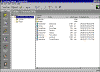
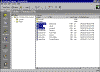
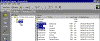

| ||||
In Lesson 1, you learned how to use the Navigation view to create the structure of the Personal Web and how to preview and apply professional-looking graphics using the Themes view.
Now that the Personal Web has been created, and you have several pages and files in your Web site, you will use some of the other FrontPage Explorer views to help you organize your FrontPage-based Web site.
You can safely and easily rearrange the pages and files in your FrontPage-based Web site using the Folders view, a split-screen display of the files in your FrontPage-based Web site. Similar to the Windows 95 (or Windows NT) Explorer, the left side, called the All Folders pane, shows a hierarchical list of the folders in your FrontPage-based Web site. Clicking on a folder in the All Folders pane displays its contents on the right side, called the Contents pane.
In the following steps, you will group the Personal Web's image files and move them to the "images" folder.

Click image to enlargeFigure 1. The Folders view
Normally, moving pages and files from one folder to another would break the hyperlinks between your pages. However, if you move files in the FrontPage Explorer's Folders view, FrontPage updates every page and hyperlink in your FrontPage-based Web site to track the new location of files and folders that have been moved.
Figure 2. The Folders button
Clicking on a column label sorts the files in the Contents pane by that criteria. The first click on a column label sorts the list in ascending order; clicking it a second time sorts it in descending order.
The list of files is now grouped by file type, with all GIF images at the top, followed by the HTM files (pages) below.

Click image to enlargeFigure 3. Selecting the image files
In the Folders view, FrontPage supports all standard Windows selection shortcuts, such as SHIFT+CLICK for selecting ranges of files, and CTRL+CLICK for selecting noncontiguous files.

Click image to enlargeFigure 4. Dragging the selection to the "images" folder
FrontPage moves the selected GIF image files to the "images" folder and automatically updates all hyperlinks to the files in the current FrontPage-based Web site.
Similarly, you can choose to group sound files, movie clips, and other types of files in their own folders. You can create new folders in the Folders view as needed.
Folders can be expanded and collapsed in the All Folders pane to bring their subfolders into view. Click the plus (+) and minus (-) signs next to a folder's name to display or hide its subfolders.
FrontPage creates a new folder with a temporary name.
The new folder is renamed and you can now drag and drop files into it.
Did you find this material useful? Gripes? Compliments? Suggestions for other articles? Write us!
© 1999 Microsoft Corporation. All rights reserved. Terms of use.